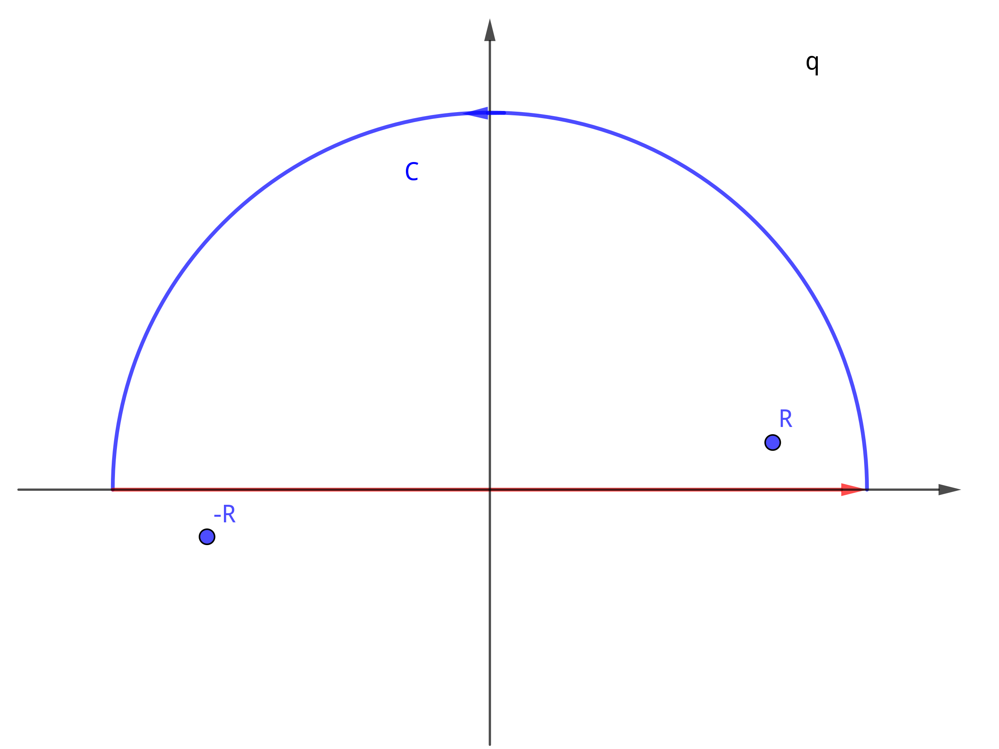
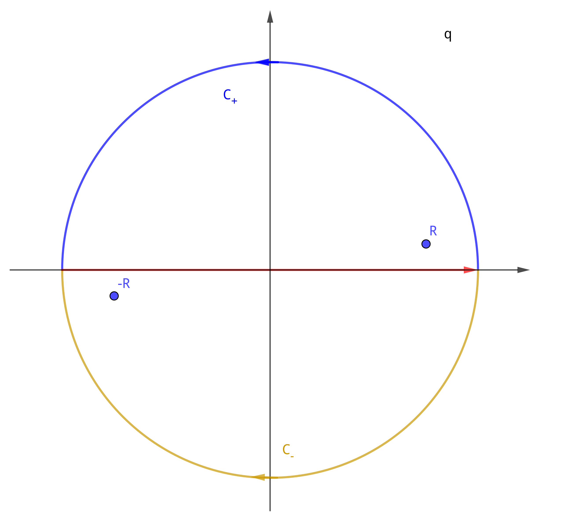

准备
High Order Residue
Cauchy Integral Formula
$$\begin{align} f(z) = \frac{1}{2\pi \mathrm{i}} \oint_C \frac{f(\xi)}{\xi - z} \mathrm{d}\xi \end{align}$$求 $n$ 阶导数
$$\begin{align} f^{(n)}(z) = \frac{\mathrm{d}^n f}{\mathrm{d} z^n} = \frac{n!}{2\pi \mathrm{i}} \oint_C \frac{f(\xi)}{(\xi - z)^{n+1}} \mathrm{d}\xi \end{align}$$复数的方根
对于 $z = re^{\mathrm{i}\phi}$
$$\begin{align} z^{ \frac{1}{n} } = r^{\frac{1}{n}} e^{\mathrm{i} \left(\frac{\theta_0}{n} + k \frac{2\pi}{n}\right)} \end{align}$$也就是有 $n$ 个方根, $k = 0, 1, \cdots , n-1$
Contour Integral I
$$\begin{align} I_1 =&\int \frac{\mathrm{d}^3q}{(2 \pi)^3} \frac{1}{(q^2 - p^2 - \mathrm{i}\epsilon)^2} \\ = & \frac{4\pi}{(2\pi)^3}\int_0^{\infty} \mathrm{d}q \frac{q^2}{(q^2 - p^2 - \mathrm{i}\epsilon)^2} \end{align}$$它有两个二阶奇点 $R$ 和 $-R$ , 并且是偶函数.

它在远处是 $\frac{1}{q^2} \to 0$ , 所以采用图中的围道. 只要计算 $z = R$ 处的留数即 可.
$$\begin{align} I_1 =& \frac{1}{2} \frac{4\pi}{(2\pi)^3}\int_{-\infty}^{\infty} \mathrm{d}q \frac{q^2}{(q^2 - p^2 - \mathrm{i}\epsilon)^2} \\ =& \frac{1}{2} \frac{4\pi}{(2\pi)^3}\oint_C \mathrm{d}q \frac{q^2}{(q^2 - p^2 - \mathrm{i}\epsilon)^2} \\ =& \frac{1}{2} \frac{4\pi}{(2\pi)^3} 2\pi \mathrm{i} \lim_{q\to R} \left\{ \frac{\mathrm{d}}{\mathrm{d}q} \left[\frac{q^2(q - R)^2}{(q - R)^2(q + R)^2}\right] \right\} \\ =& \frac{1}{2} \frac{4\pi}{(2\pi)^3} 2\pi \mathrm{i} \frac{1}{4R} \\ =& \frac{\mathrm{i}}{8\pi p} \end{align}$$最后一个等号取了 $\epsilon \to 0$ .
Contour Integral II
$$\begin{align} I_2 =& \int \frac{\mathrm{d}^3q}{(2\pi)^3} \frac{e^{\mathrm{i}\vec{q}\cdot \vec{r}}}{(q^2 - p^2 - \mathrm{i}\epsilon)^2} \\ =& \frac{2\pi}{(2\pi)^3}\frac{1}{\mathrm{i}r} \int_0^{\infty}\mathrm{d}q \frac{q (e^{\mathrm{i}qr} - e^{-\mathrm{i}qr})}{(q^2 - p^2 - \mathrm{i}\epsilon)^2} \end{align}$$与 $I_1$ 类似, 也是一个偶函数, 有两个二阶 pole. 不同之处在于, 它在无穷远处的积分 为零需要由 Jordan's Lemma 来判定.
$$\begin{align} I_2 =& \frac{2\pi}{(2\pi)^3}\frac{1}{\mathrm{i}r} \frac{1}{2} \left[\int_{-\infty}^{\infty}\mathrm{d}q \frac{q e^{\mathrm{i}qr} }{(q^2 - p^2 - \mathrm{i}\epsilon)^2} + \int_{-\infty}^{\infty}\mathrm{d}q \frac{-q e^{\mathrm{-i}qr} }{(q^2 - p^2 - \mathrm{i}\epsilon)^2} \right] \end{align}$$
根据 Jordan's Lemma, 第一项在上半平面无穷远的圆弧上积分为为, 第二项是下半平面, 因此取不同的围道计算两个积分.
第一项
$$\begin{align} &\int_{-\infty}^{\infty}\mathrm{d}q \frac{q e^{\mathrm{i}qr} }{(q^2 - p^2 - \mathrm{i}\epsilon)^2} \\ = &\oint_{C_+}\mathrm{d}q \frac{q e^{\mathrm{i}qr} }{(q^2 - p^2 - \mathrm{i}\epsilon)^2} \\ = &2\pi \mathrm{i} \lim_{q\to R}\left\{ \frac{\mathrm{d}}{\mathrm{d}q}\left[ \frac{q e^{\mathrm{i}qr }(q - R)^2 }{(q - R)^2(q + R)^2} \right] \right\} \\ = & 2\pi \mathrm{i} \frac{i r e^{\mathrm{i}Rr}}{4R} \end{align}$$第二项 (注意此围道绕向为顺时针)
$$\begin{align} &\int_{-\infty}^{\infty}\mathrm{d}q \frac{- q e^{-\mathrm{i}qr} }{(q^2 - p^2 - \mathrm{i}\epsilon)^2} \\ = &-\oint_{C_-}\mathrm{d}q \frac{-q e^{-\mathrm{i}qr} }{(q^2 - p^2 - \mathrm{i}\epsilon)^2} \\ = &2\pi \mathrm{i} \lim_{q\to -R}\left\{ \frac{\mathrm{d}}{\mathrm{d}q}\left[ \frac{ q e^{-\mathrm{i}qr }(q + R)^2 }{(q - R)^2(q + R)^2} \right] \right\} \\ = & 2\pi \mathrm{i} \frac{i r e^{\mathrm{i}Rr}}{4R} \end{align}$$取 $\epsilon \to 0, \Rightarrow R \to p$ , 得
$$\begin{align} I_2 =& \frac{2\pi}{(2\pi)^3}\frac{1}{\mathrm{i}r} \frac{1}{2} \times \left(2\pi \mathrm{i} \frac{i r e^{\mathrm{i}Rr}}{4R} + 2\pi \mathrm{i} \frac{i r e^{\mathrm{i}Rr}}{4R} \right) \\ =& \frac{\mathrm{i} e^{\mathrm{i} p r}}{8\pi p} \end{align}$$Reference
- PhysRevA.78.053606, Eqn A13(b), A14(b)